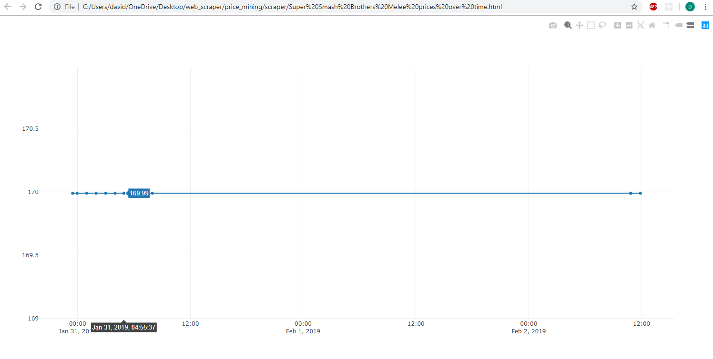

What have I done with Python?
Scraped prices off Amazon into a TinyDB, for later use in ploty
Built a full-stack web app to let users rate books

Took a data science and algorithms course from MIT
Used the Fabric library to simulate asynchronous human-like file, HTTP, and application-opening behavior on a diverse set of operating systems to test an operating system monitoring tool